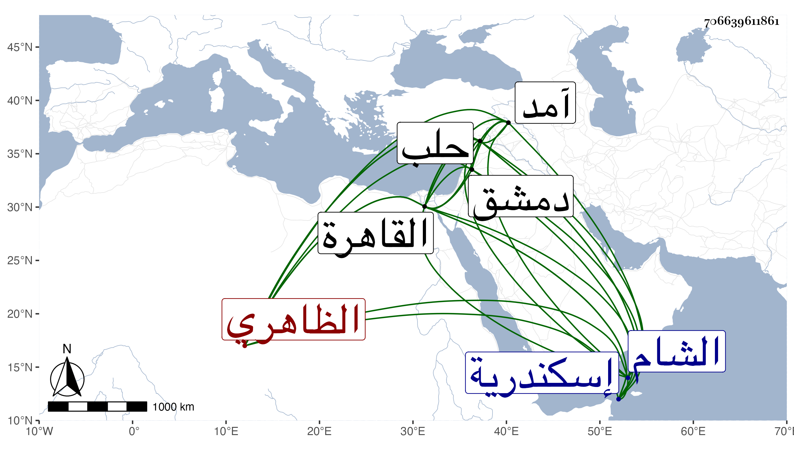

0902Sakhawi.DawLamic.ITO20230111-ara1.EIS1600.706639611861
Biography ID: 706639611861
740
قطج من تمراز الظاهري برقوق . صار خاصكيا في أيام المؤيد ثم تأمر بعد عشرة إلى أن تقدم في أيام الأشرف ثم قبض عليه وأرسل به مقيدا إلى إسكندرية في شوال سنة إحدى وثلاثين ثم أطلقه وأنعم عليه بتقدمة حلب واستمر إلى أن سافر إلى آمد فأنعم عليه بأتابكيتها ، وقدم في أيام الظاهر فأقام بالقاهرة بطالا ملازما للخدمة السلطانية مظهرا للفقر مكثرا من الشكوى مستمنحا الأمراء ، ولم يلبث أن مات في العشر الأوسط من رمضان سنة ثلاث وأربعين ووجد له نحو ثلاثين ألف دينار نقدا ومن غيره أشياء ، وكان جركيسا كبير اللحية بخيلا جبانا غير محبب إلى الناس عفا الله عنه . ذكره شيخنا في أنبائه باختصار . وقال المقريزي : طقج الناصري أحد مماليك الناصرية فرج . ترقى في الخدم حتى صار من مقدمي الألوف ثم أخرج إلى الشام فتنقل في أمريات بحلب ودمشق ثم قدم القاهرة ووعد بإمرة فلم تطل إقامته حتى مات وترك مالا جزيلا وكان من الشح المفرط والطمع الزائد بغاية يستحيا من ذكرها .
